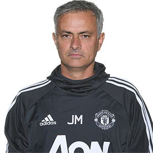

Dette er Old Trafford
Manchester United Football Club er en engelsk fotballklubb som spiller i Premier League. Klubben ble stiftet i 1878, under navnet Newton Heath LYR Football Club, og ble valgt inn i The Football League i 1892. I 1902 fikk klubben sitt nåværende navn. «The Red Devils», som er kallenavnet til Manchester United, har siden 1910 spilt hjemmekampene sine på Old Trafford i Manchester. Manchester United har vunnet den engelske ligaen 20 ganger, som er rekord. De har vunnet FA-cupen 12 ganger, ligacupen fem ganger og de har også rekorden for vunnede FA Community Shield med 21 seire, inkludert delinger. Klubben har vunnet Mesterligaen tre ganger samt at de har vunnet Europaligaen, Cupvinnercupen, UEFA Super Cup, Intercontinental Cup og VM i fotball for klubblag en gang. I 1999 ble Manchester United den første engelske klubben som vant The Treble – Premier League, FA-cupen og Mesterligaen i samme sesong.

Manchester United sin trener, Jose Mourinho.
